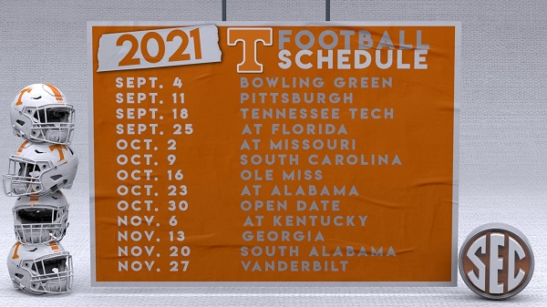

Current Stuggles
If you follow college football you should be familiar with the current situation Tennessee is in. Looming NCAA sanctions, multiple transfer from key players, and another frustrating coaching search has left many Volunteer fans jaded. Hopefully under the guidance of our new staff lead by Josh Heupel we can return to our former glory. The image below shows the current state of the Volunteer football program. Hover over it to see the future I hope for this team.
This video was made for me by my buddy after the disastrous 2020 season.
The Upcoming 2021 Season
The following image below is the 2021 Tennessee Football Schedule. Click on the opposing team's name to visit that team's websites.
